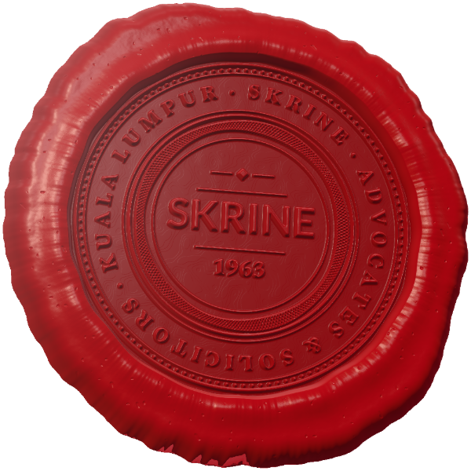

About us
Our Story
Six decades, one belief: that integrity is the cornerstone of the practice of law.
Our story begins in
On 1 May 1963, five like-minded partners founded Skrine & Co., and with it a way of practising law that has guided the firm ever since.
Read our storySkrine & Co.
Established · 1 May 1963
“Integrity is the cornerstone of the practice of law.”
Founding partners
- John Skrine
- Stanley Peddie
- Peter Mooney
- William Donald Bewsher
- Chin Yoong Chong

Six decades
From five partners to one of Malaysia’s largest firms
-
1963
The founding
On 1 May 1963, John Skrine and his like-minded partners Stanley Peddie, Peter Mooney, William Donald Bewsher and Chin Yoong Chong founded Skrine & Co, guided by the belief that integrity is the cornerstone of the practice of law.
Together, they built the firm by taking care of its people and delivering the highest levels of service to clients, all the while anchored to the tenets of justice and dedication.
-
The years after
A reputation that grew
This ethos attracted some of the best legal minds in Malaysia, which in turn resulted in a blue-chip client list and the respect of peers. The firm flourished and grew, and with that came global recognition from clients and firms around the world.
-
1 January 2000
Skrine & Co. becomes Skrine
Skrine & Co. became simply known as Skrine on 1 January 2000.
-
Today
One of the largest firms in the country
Today, the firm is one of the largest legal firms in the country with a global reputation. We have a wide range of practice groups to meet the specialised needs of our clients. We remain steadfast in our commitment to the development of legal minds and the improvement of the community in which we live.
In an increasingly borderless and competitive world, where the law is challenged in new ways daily, Skrine remains resolutely committed to its founding principles: Wisdom. Fortitude. Ingenuity.
1963
The founding partners
Five partners, one belief.
- John SkrineFounding partner · 1963
- Stanley PeddieFounding partner · 1963
- Peter MooneyFounding partner · 1963
- William Donald BewsherFounding partner · 1963
- Chin Yoong ChongFounding partner · 1963
I have been pondering on why Providence has been so kind to Skrine & Co. up to date, and how this firm founded by a polo-playing Anglican Englishman, a bridge-playing Presbyterian Scotsman, a piano-playing Roman Catholic Irishman, a north country beer connoisseur Englishman (religion unknown) and an Ipoh Chinese Methodist managed to cohere as well as it did to attract a string of Asian partners, and to keep and then expand its clientele.
Perhaps the enterprise prospered because we trusted each other, did not spare ourselves in trying to provide a good and honest service to our clients, and because we were absolutely dedicated to making the firm a success.
Our values
What we stand by, every day
We believe that wisdom comes from being open to learning.
We are passionate about learning and development. We encourage open discussion and debate. We share our knowledge with colleagues and clients; and strive to be thought leaders in all areas of the law. We use the vast knowledge and experience of our people to make good decisions and provide sound counsel.
We set and demand high standards.
Just ‘good’ is never good enough – we strive for excellence in all that we do. We reward determination, resilience and grit in the face of challenges, as we do achievement. We value our history, our principles and our traditions of service, and we strive to live up to them every day.
We don’t believe in standing still.
We explore new and innovative ways to ensure long-term sustainability. We embrace developments in law, technology, and service in order to exceed our clients’ expectations as their needs continue to evolve.